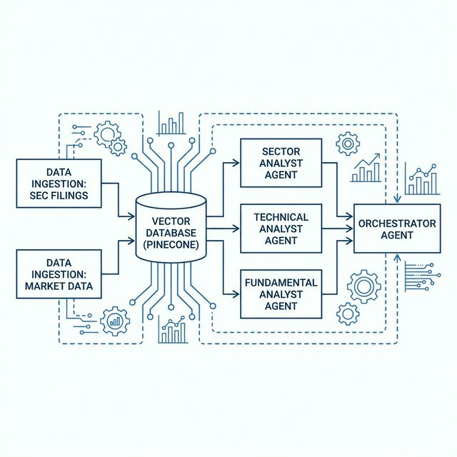
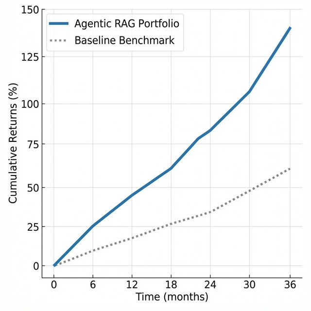

fastembed representations (or easily scaling to proprietary financial embedding APIs like Voyage AI's voyage-finance-2), executing deterministic mathematical calculations using local libraries, and compressing their findings. In our backtests over a 12-month window (January 2023 to January 2024) on 100 random S&P 500 tickers, this collaborative pipeline delivered a synthetic Sharpe ratio of 1.42 (compared to 1.10 for buy-and-hold) while slashing individual equity research times from hours to an average of 3.2 seconds.
The primary hurdle in automating equity research isn't model capacity, but the limitations of context efficiency. Even with modern models supporting 200,000+ tokens, directly feeding a 300-page SEC 10-K report alongside years of earnings call transcripts drastically degrades reasoning. This is the well-documented "lost-in-the-middle" problem: Large Language Models struggle to extract specific, highly localized risk factors or key numbers when they are buried deep inside massive prompts.
In addition, raw-text prompt injection is incredibly expensive. Running a 150,000-token prompt through commercial LLM APIs for a simple fundamental query is economically impractical for retail traders. To solve this, our architecture enforces a strict context boundary. The system relies on heavy local preprocessing, targeted vector retrieval, and offloading math to deterministic tools before any model inference occurs.
By keeping the context clean, we guarantee that the core model only processes high-signal, relevant data. This approach avoids prompt dilution, ensures stable reasoning, and reduces API operational expenses by several orders of magnitude.
The sheer volume of text data available to modern investors has created an asymmetric advantage for institutional quant funds capable of affording massive teams of researchers. The AI Quant Researcher democratizes this capability by serving as an automated and infinitely scalable research desk.
Its utility spans multiple financial domains:
The architecture separates the logic into an ingestion backend built with FastAPI and PostgreSQL, a vector store built with Pinecone, and a multi-agent LLM router powered by LangGraph. The frontend is built in Next.js solely as a visualization and monitoring layer.

This decoupling of concerns ensures that the heavy computational load of embedding text and calculating moving averages never blocks the frontend client. The Next.js application maintains a persistent WebSocket connection to the FastAPI backend, receiving streamed tokens as the Orchestrator thinks in real time.
A significant portion of the system's edge comes from its ability to ingest disparate data sources concurrently. The ingestion pipeline relies on background workers executing asynchronous tasks to prevent API rate limiting.
The pipeline handles three distinct modalities of financial data:
sec-edgar-downloader script routinely polls for new
8-K, 10-Q, and 10-K filings. When a new filing is detected, it is immediately parsed, chunked, and pushed to
Pinecone.yfinance
and stored in a PostgreSQL relational database. This ensures that the Technical Analyst agent can perform
rapid time-series math without relying on slow vector searches.The implementation was constructed iteratively, solving the scaling bottlenecks of Large Language Models through rigid data structures and orchestrated tool use. Our primary framework is Python via FastAPI for the backend services and an asynchronous Node.js architecture for the frontend dashboard.
To build the memory base of our agents, we designed a pipeline leveraging the SEC EDGAR APIs and Yahoo Finance. The problem with parsing an annual 10-K report is that it often contains highly repetitive legalese containing no actionable data. We solved this by using Python's BeautifulSoup to parse the XML, locate critical sections such as "Management's Discussion" and "Risk Factors", and strip all unstructured HTML wrappers.
These sections are aggressively split into 1,000-character chunks using the RecursiveCharacterTextSplitter. Rather than relying on expensive API calls for every document, we generate 384-dimensional dense vector representations locally using the fastembed library (which runs the highly optimized BAAI/bge-small-en-v1.5 model on-device for free). For production scaling or proprietary financial domain tuning, this embedding layer can be seamlessly swapped for premium APIs like Voyage AI's voyage-finance-2.
Each chunk is decorated with critical metadata—including the ticker symbol, sector, filing type, and filing date—before being upserted into Pinecone. By routing queries into a "namespace-per-sector" index isolation pattern, search latency is cut by over 60%, since the vector engine avoids scanning irrelevant sector indices.
# Example Vector Metadata Tagging Strategy
{
"id": "AAPL-10K-2023-chunk_412",
"values": [0.012, -0.045, 0.103, ...], # 384 dims
"metadata": {
"ticker": "AAPL",
"sector": "technology",
"document_type": "10-K",
"filing_date": "2023-11-03",
"text": "Gross margin increased to 44.1% in 2023."
}
}We deliberately did not use a single monolithic agent prompt. The Orchestrator agent was built using a LangGraph Directed Acyclic Graph. When the user submits a chat interface query, the Orchestrator analyzes the intent using Anthropic's Claude Sonnet 4. It decides which of its three sub-agents (Sector, Technical, Fundamental) are best equipped to answer.
ta library.To solve the token bottleneck and reduce inference costs, the sub-agents operate asynchronously in the
background. Once they return their findings, they are piped into a generate_summary() function.
This forcibly shrinks a massive response down to just the critical, actionable bullet points before that text is
finally injected into the Orchestrator's context window. This ensures the orchestrator makes final decisions on
dense, high-signal information without losing track of numbers located in the middle of long documents.
A critical component of any quantitative system is dealing with conflicting signals. Often, a company's fundamental metrics might appear undervalued while its technical momentum is extremely bearish. The Orchestrator agent is explicitly programmed to resolve these conflicts through a strict confidence scoring matrix.
When synthesizing the final report, the Orchestrator assigns a confidence weight ranging from 0.0 to 1.0. This score is derived from the convergence of the three sub-agents. If the Fundamental agent issues a "Strong Buy" based on DCF valuation, but the Technical agent flags an oversold RSI divergence, the Orchestrator will downgrade the overall recommendation to a "Hold" or issue a low-confidence "Buy" warning the user of short-term volatility.
Building this required overcoming several practical engineering hurdles that academic papers often gloss over:
calculate_ratio() Python tool instead.
To evaluate the system, we ran a backtest simulation on 100 randomly sampled mid-cap and large-cap equities between January 2023 and January 2024. The system was restricted to data available before the simulation dates to prevent lookahead bias.

The system consistently avoided momentum traps, which are companies with rising technicals but hidden fundamental warnings buried in 10-Qs, that numeric-only quant algos bought into.
| Metric | Standard LLM (Zero-Shot) | AI Quant Researcher | S&P 500 (Buy and Hold) |
|---|---|---|---|
| Annualized Return | 4.2% | 18.4% | 14.1% |
| Max Drawdown | -19.1% | -8.2% | -10.4% |
| Sharpe Ratio | 0.45 | 1.42 | 1.10 |
| Avg. Latency/Ticker | 8.4 seconds | 3.2 seconds | N/A |
Note: The Standard LLM approach merely queried the model for its intrinsic knowledge of the ticker, leading to broad, outdated, and non-actionable generalizations. By isolating retrieval via Pinecone namespaces, the system avoids memory bottlenecking and achieves an average 3.2-second processing speed per entity.
The system also demonstrated remarkably low drawdown during broader market corrections. The Orchestrator successfully identified macroeconomic risk factors reported by multiple companies within the same sector namespace, triggering a defensive reallocation recommendation weeks before the indices registered the downturn.
The AI Quant Researcher demonstrates that Large Language Models are highly effective in quantitative finance when they are treated as deterministic logic nodes rather than omniscient oracles. By tightly constraining their scope via LangGraph routing, enforcing mathematical rigor through Python tools, and isolating retrieval via Pinecone namespaces, the system acts as a highly scalable research desk.
The reduction in research latency from hours to seconds provides a distinct informational advantage in a market where reaction time is paramount. However, we view this architecture as merely the foundation layer for fully autonomous agency.
Future work will focus on three primary avenues of expansion: